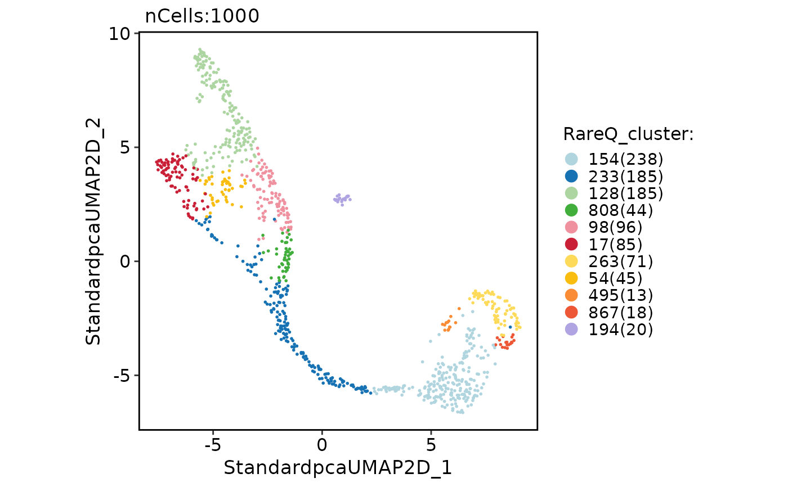
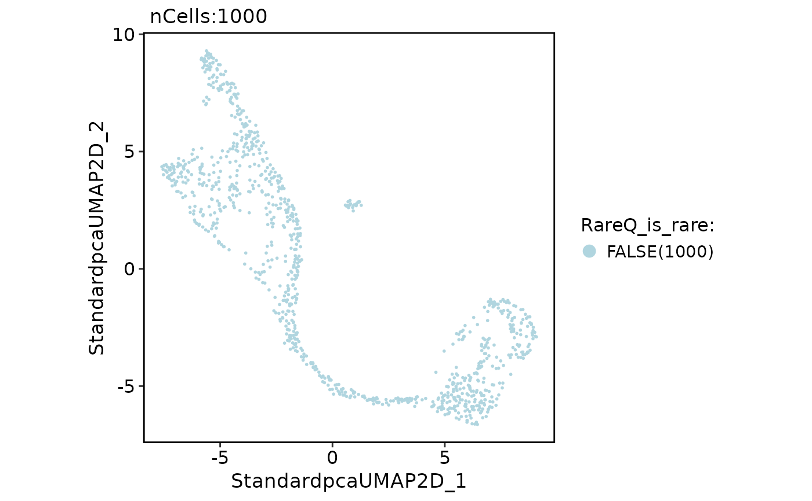
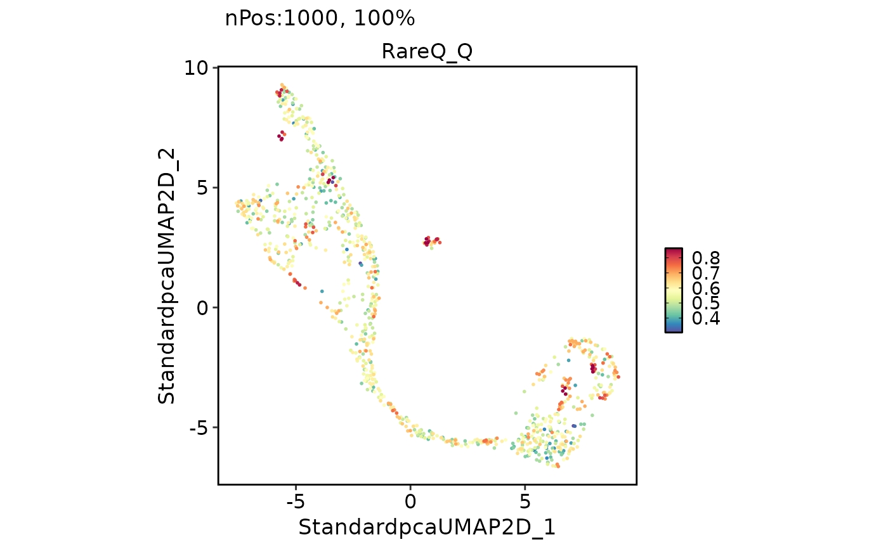

RareQ rare-cell population detection
Usage
RunRareQ(
srt,
assay = NULL,
reduction = "pca",
dims = 1:30,
k.param = 20,
k = 6,
Q_cut = 0.6,
ratio = 0.2,
max_iter = 100,
run_neighbors = TRUE,
force_recalc = FALSE,
neighbor_name = NULL,
find_neighbors_params = list(),
rare_threshold = 0.01,
prefix = "RareQ",
cluster_colname = paste0(prefix, "_cluster"),
q_colname = paste0(prefix, "_Q"),
size_colname = paste0(prefix, "_cluster_size"),
rare_colname = paste0(prefix, "_is_rare"),
tool_name = "RareQ",
verbose = TRUE
)Arguments
- srt
A Seurat object.
- assay
Which assay to use. If
NULL, the default assay of the Seurat object will be used. When the object also containsChromatinAssay, the default assay and additionalChromatinAssaywill be preprocessed sequentially.- reduction
Reduction used to build nearest neighbors when the required
{assay}.nnneighbor slot is absent orforce_recalc = TRUE. IfNULL,DefaultReduction()is used.- dims
Dimensions from
reductionused for nearest-neighbor search.- k.param
Number of nearest neighbors to compute with
Seurat::FindNeighbors()when neighbor search is needed.- k
Number of nearest neighbors used by RareQ to compute Q values.
- Q_cut
Q-value threshold passed to
RareQ::FindRare().- ratio
Merge-ratio threshold passed to
RareQ::FindRare().- max_iter
Maximum number of RareQ propagation iterations.
- run_neighbors
Whether to build the required Seurat neighbor slot if it is missing.
- force_recalc
Whether to rebuild the Seurat neighbor slot before running RareQ.
- neighbor_name
Name of the Seurat
Neighborobject to reuse or create. IfNULL, defaults to{assay}.nn, which is the neighbor slot required byRareQ::ComputeQ()andRareQ::FindRare(). A non-default neighbor is copied to{assay}.nnbefore running RareQ because RareQ reads that slot directly.- find_neighbors_params
Additional named parameters passed to
Seurat::FindNeighbors()when neighbor search is run.- rare_threshold
Cluster-size threshold used to mark rare clusters. A value smaller than 1 is treated as a fraction of cells; a value of 1 or larger is treated as a cell count. Set to
NULLto skip rare flags.- prefix
Prefix used for metadata columns.
- cluster_colname, q_colname, size_colname, rare_colname
Metadata column names for RareQ clusters, Q values, cluster sizes, and rare-cluster flags.
- tool_name
Name of the
srt@toolsentry.- verbose
Whether to print the message. Default is
TRUE.
References
Fa, B. et al. Cell neighborhood topology directs rare cell population identification. Nature Communications (2026). doi:10.1038/s41467-026-71180-x
Examples
data(pancreas_sub)
pancreas_sub <- standard_scop(
pancreas_sub,
verbose = FALSE
)
#> ℹ [2026-06-28 21:14:05] Skip `log1p()` because `layer = data` is not "counts"
pancreas_sub <- RunRareQ(
pancreas_sub,
dims = 1:20
)
#> ℹ [2026-06-28 21:14:45] Build Seurat nearest neighbors for RareQ using reduction "Standardpca"
#> Computing nearest neighbors
#> Only one graph name supplied, storing nearest-neighbor graph only
#> ℹ [2026-06-28 21:14:45] Run RareQ with `k = 6`, `Q_cut = 0.6`, and `ratio = 0.2`
#> ℹ [2026-06-28 21:14:45] RareQ clusters stored in metadata column "RareQ_cluster"
CellDimPlot(
pancreas_sub,
group.by = "RareQ_cluster"
)

CellDimPlot(
pancreas_sub,
group.by = "RareQ_is_rare"
)

FeatureDimPlot(
pancreas_sub,
features = "RareQ_Q"
)
